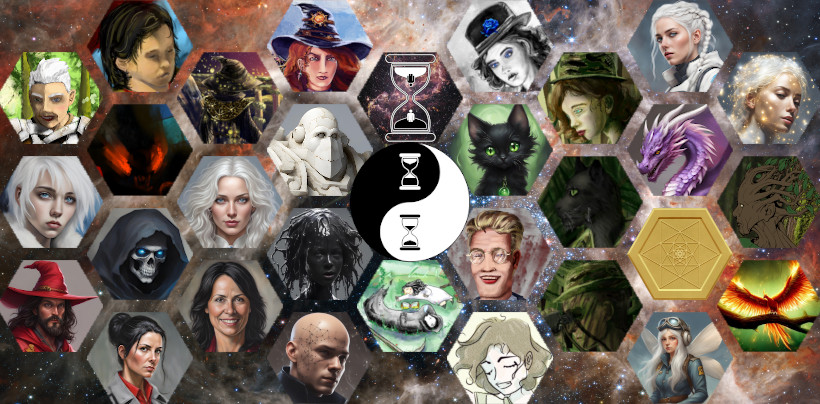
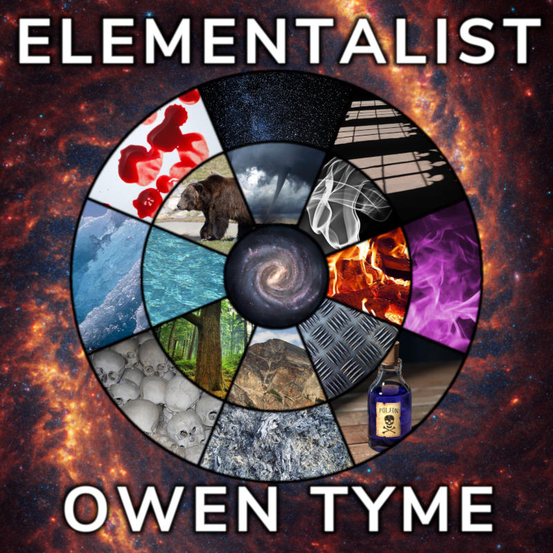

Tymely News
Elementalist #1

Once again, I'm making a musical album, this time titled Elementalist. The music centers around the main character of Ashen Blades, who's known by many names and insults, including The Hunter, Little Miss Secret, LMS, brat, Itsa Secret Watson, and most recently, Artemis Watson.
This album will revolve around her various encounters with the elemental spirits and the way defeating them in battle has been transforming her magical powers.
So far, I've got three tracks done, including The Hunter, Call of the Jungle and Unwanted War, which will be the first three and an excellent introduction for things to come.
So far, every song has been written from the perspective of The Hunter, but I have plans for at least one future track to be from the perspective of the Metal Spirit and if I can figure out how, one of them is supposed to be a duet, between The Hunter and the Smoke Spirit.
However, I'll be honest, here and now: the album isn't likely to be finished for quite some time, because some of the encounters with elemental spirits have not been written yet and I don't want to paint myself into a corner, through musical lyrics, something I did a little bit with Rowley's Roar (lesson learned, not making that mistake again).
Alternatively, I may break Elementalist up into a series of two or three albums and mix in some material unrelated to the elements.
Regardless, I'm finding inspiration for the novels while writing lyrics and the story is going to take some wild twists in the future, especially as the end of the series draws near.
Within the series, I may make reference to these songs, via Alice, the third personality of the Hunter. In retrospect, she's always been a little one-dimensional, little more than a stoner personality created through an unwanted splash of LSD in the face, but I think giving her some talent for music and other creative endeavors would be an interesting way to flesh her out in future volumes, since the three personalities of the Hunter have been getting along better in the volume I'm writing at the moment.
They're likely to start treating the Hunter's body like a timeshare in the novel to follow, to find a better mental balance. Since that's She Hunts Gremlins, it would be an amusing for Alice to be using AI to make music based on the Hunter's life story.
The Hunter
The first song is a heavy metal track titled The Hunter, in which she introduces herself, in song, giving a rough summary of her motivations.
I love the little echoing guitar plucks in this one.
You can read more about the Hunter from her character feature or you can go into greater depth by reading She Hunts Demons, which starts the series and by the way, the Ebook is currently free in most stores (Amazon hates independent authors doing permanent freebies, but you can request a price match).
Lyrics
Demon-hunter: my father,
Demon-witch: my own mother,
Little black cat: my brother,
I'm not one or the other!Within me is a demon,
But that is not all I am!
Within me is a human,
Conflict fills my every gram!Chorus:
Revenge, my favorite dish,
They say it is best served cold,
Hot rage, certainly my niche,
Can I, these feelings withhold?Also, a witch within me,
Giving me the best of flame,
My shadows seek to be free,
Yet no one gave me a name!The Hunter, I call myself,
Though I cannot speak my truth,
Not a model off the shelf,
And forever in my youth!(Chorus)
Parents dead by demon hand,
Every demon would I cease!
Will I rage throughout the land,
Or find little bit of peace?My inner grief never ends,
And demon curse took my voice!
He can never make amends,
And for me, there be no choice!(Chorus)
The war will last forever,
The fight is always dirty,
That demons I might sever,
But still time to be pretty!Heroes can show up a mess,
I think heroines should not,
I'm no damsel in distress,
The little black dress, my lot!(Chorus)
(Chorus)
Here's a link to the MP3 file, if you'd like to download it.
The Hunter is copyright 2026, Owen Tyme, all rights reserved, but free for your personal enjoyment. Lyrics by Owen Tyme, music generated with ACE-Step 1.5. E-mail me if you want to use it for something else.
Call of the Jungle
The second song is a heavy metal track titled Call of the Jungle, in which the Hunter is ambushed by the Wood Spirit in the jungles of Veitnam, in 1972, when she tracked a demon there on a seek and destroy mission.
This marks the beginning of her conflict with the elemental spirits, though it could also be termed a dialog, because not every spirit attacks her and some choose to join their minds to hers.
The beat of this one very much reminds me of a heartbeat, which gives it a certain animal urgency that's very fitting to the scenes from the novel it's based on.
This song is based on events from She Goes to War, if you'd like to read the original source material.
Lyrics
Demons did fill the jungle,
And I came to slay them all,
In mud, I took a trundle,
Not a very graceful fall.I heard the call of the wild,
It was pounding in my ear,
And the jungle whispered mild,
It drew my soul very near.Chorus:
Jungle high-jacked my body,
And did take it for a spin!
But her control is shoddy,
A fight she can never win!Rises up, my nature feline,
A panther, I now become,
Despite it, my will still mine,
I won't be put under thumb!She can't break me, I won't kill,
Every human, safe from me,
I would die upon that hill,
Before bowing to some tree!(Chorus)
"Mine!", say I to tree's spirit,
Of my body, mind and soul,
Felonious wood pirate,
So, go on, and take a stroll!In my heart, she's taken root,
Refuses to accept a hint,
While my friends press the dispute,
Fight for me, some little glint!(Chorus)
You might call me weed whacker,
After taking sword to tree,
And I really smack her,
With my old wakizashi!"Kneel before me now, or die,"
"Body-jacking spirit tree,"
"Kiss this very boot or fry!"
So she surrenders to me!(Chorus)
(Chorus)
Here's a link to the MP3 file, if you'd like to download it.
Call of the Jungle is copyright 2026, Owen Tyme, all rights reserved, but free for your personal enjoyment. Lyrics by Owen Tyme, music generated with ACE-Step 1.5. E-mail me if you want to use it for something else.
Unwanted War
The third song is a rock track titled Unwanted War, in which the Hunter laments, in retrospect, about the war she never wanted, which came to her, because she can't get the Wood Spirit out of her head and the other nature spirits eventually took notice, attacking out of familial rage.
This song is based on comments passed between Verda Bagley and the Hunter, during She Goes to Summer Camp, but their efforts to remove the Jungle Spirit from the girl's mind were no more than a passing comment. Technically speaking, that one is more properly termed the Wood Spirit, but the characters didn't really puzzle that out until the book after that, if I remember correctly.
Lyrics
Already fighting a war,
I didn't want another.
Elements gave me a chore,
And I can't whine to mother.Tree spirit did attack me,
Simply for wrong place, wrong time.
Out of my head and be free,
I don't want to pay the dime!Chorus:
Over my corpse, they'd rejoice,
Spirits seek my life to hew!
This girl has no better choice,
She'll have to win this war too!What of spirits, anyway,
And why don't they mind their place?
Why do they each, at me bray,
And occasionally chase?Air tried to slay me in sleep,
And Earth woke from her slumber!
Then Metal questions me most deep,
Fire also in the number!(Chorus)
What's a girl supposed to do,
With situation nagging?
Can I find a good way through,
Maybe send spirits packing?Can I do what none before,
No man, witch or demon can?
Force every one to my core,
And make spirits my divan?(Chorus)
I'm resigned to stupid fate,
The war of spirits, to win.
They'll probably always hate,
But I can ignore their din.Mine, will their powers soon be,
For revenge, I may obtain.
For my most violent spree,
Ensuring all demons, slain.(Chorus)
Here's a link to the MP3 file, if you'd like to download it.
Unwanted War is copyright 2026, Owen Tyme, all rights reserved, but free for your personal enjoyment. Lyrics by Owen Tyme, music generated with ACE-Step 1.5. E-mail me if you want to use it for something else.
Tags: audio, music, elementalist